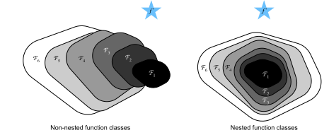
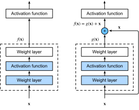
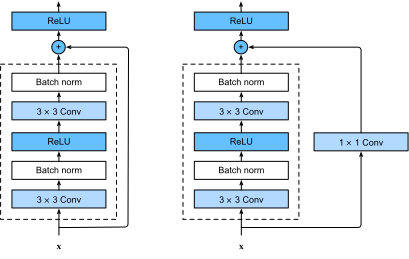
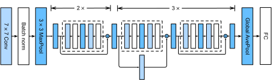
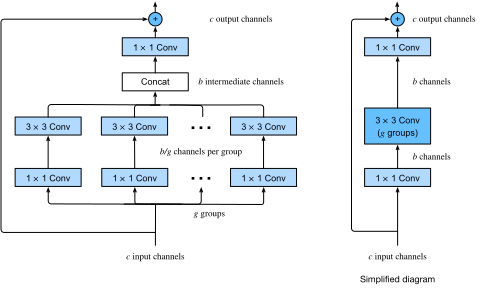

8.6. 残差网络（ResNet）与 ResNeXt¶
当我们设计越来越深的网络时，理解添加层如何能增加网络的复杂度和表达能力就变得至关重要。 甚至更重要的是，要有能力设计出这样的网络：添加层使网络严格地更具表达能力，而不仅仅是有别于原来。 为了取得一些进展，我们需要一点数学。
import torch
from torch import nn
from torch.nn import functional as F
from d2l import torch as d2l
from mxnet import init, np, npx
from mxnet.gluon import nn
from d2l import mxnet as d2l
npx.set_np()
import jax
from flax import linen as nn
from jax import numpy as jnp
from d2l import jax as d2l
import tensorflow as tf
from d2l import tensorflow as d2l
8.6.1. 函数类¶
考虑 \(\mathcal{F}\)，即某个特定网络架构（连同学习率和其他超参数设置）所能达到的函数类。 也就是说，对于所有 \(f \in \mathcal{F}\)，都存在某组参数（例如权重和偏置），这些参数可以通过在合适的数据集上训练得到。 让我们假设 \(f^*\) 是我们真正希望找到的“真值”函数。 如果它属于 \(\mathcal{F}\)，那我们就很幸运，但通常我们不会这么走运。 相反，我们会尝试找到某个 \(f^*_\mathcal{F}\)，它是我们在 \(\mathcal{F}\) 内的最佳选择。 例如， 给定具有特征 \(\mathbf{X}\) 和标签 \(\mathbf{y}\) 的数据集， 我们可能尝试通过求解以下优化问题来找到它：
我们知道正则化 (Morozov, 1984, Tikhonov and Arsenin, 1977) 可以控制 \(\mathcal{F}\) 的复杂度 并达到一致性，因此训练数据规模越大， 通常得到的 \(f^*_\mathcal{F}\) 越好。 我们完全有理由假设：如果我们设计一个不同且更强大的架构 \(\mathcal{F}'\)，就应该得到更好的结果。换句话说，我们会期望 \(f^*_{\mathcal{F}'}\) 比 \(f^*_{\mathcal{F}}\) “更好”。然而，如果 \(\mathcal{F} \not\subseteq \mathcal{F}'\)，那么甚至不能保证这种情况会发生。事实上，\(f^*_{\mathcal{F}'}\) 完全可能更差。 如 图8.6.1 所示， 对于非嵌套函数类，更大的函数类并不总是更接近“真值”函数 \(f^*\)。例如， 在 图8.6.1 的左侧， 尽管 \(\mathcal{F}_3\) 比 \(\mathcal{F}_1\) 更接近 \(f^*\)，但 \(\mathcal{F}_6\) 却偏离得更远，并且不能保证进一步增加复杂度就能减小与 \(f^*\) 的距离。 对于嵌套函数类， 即 图8.6.1 右侧的 \(\mathcal{F}_1 \subseteq \cdots \subseteq \mathcal{F}_6\)， 我们可以避免非嵌套函数类所带来的上述问题。

图8.6.1 对于非嵌套函数类，更大的（以面积表示）函数类并不保证我们能更接近“真值”函数（\(\mathit{f}^*\)）。在嵌套函数类中不会发生这种情况。¶
因此， 只有当较大的函数类包含较小的函数类时，我们才能保证增加它们会严格增加网络的表达能力。 对于深度神经网络， 如果我们能把 新添加的层训练成一个恒等函数 \(f(\mathbf{x}) = \mathbf{x}\)，新模型就会和原模型一样有效。由于新模型可能获得更好的解来拟合训练数据集，添加的层可能会使减小训练误差变得更容易。
这正是 He et al. (2016) 在研究非常深的计算机视觉模型时所考虑的问题。 他们所提出的残差网络（residual network，ResNet）的核心思想是：每一个额外的层都应 更容易地 将恒等函数作为其元素之一包含进来。 这些考虑相当深刻，但它们引出了一个惊人简单的 解决方案——残差块（residual block）。 凭借它，ResNet 在 2015 年赢得了 ImageNet 大规模视觉识别挑战赛。这一设计对如何 构建深度神经网络产生了深远影响。例如，残差块已被添加到循环网络 (Kim et al., 2017, Prakash et al., 2016)。同样，Transformer (Vaswani et al., 2017) 使用它们来高效地堆叠许多层网络。它也被用于图神经网络 (Kipf and Welling, 2016)，并且作为一个基本概念，它已在计算机视觉中被广泛使用 (Redmon and Farhadi, 2018, Ren et al., 2015)。 请注意，在残差网络之前已有公路网络（highway network）:cite:srivastava2015highway，二者共享部分动机，尽管后者没有围绕恒等函数的优雅参数化。
8.6.2. 残差块¶
让我们关注神经网络的一个局部部分，如 图8.6.2 所示。用 \(\mathbf{x}\) 表示输入。 我们假设 \(f(\mathbf{x})\) 是我们希望通过学习获得的理想底层映射，它将作为顶层激活函数的输入。 在左侧， 虚线框内的部分 必须直接学习 \(f(\mathbf{x})\)。 在右侧， 虚线框内的部分 需要学习残差映射 \(g(\mathbf{x}) = f(\mathbf{x}) - \mathbf{x}\)， 残差块正是由此得名。 如果恒等映射 \(f(\mathbf{x}) = \mathbf{x}\) 是理想的底层映射， 那么残差映射就变为 \(g(\mathbf{x}) = 0\)，因此更容易学习： 我们只需将虚线框内 上层权重层（例如全连接层和卷积层） 的权重和偏置 推为零。 右图展示了 ResNet 的残差块， 其中将层输入 \(\mathbf{x}\) 传送到加法算子的实线 称为残差连接（residual connection，或捷径连接（shortcut connection））。 有了残差块，输入可以 更快地通过残差连接跨层前向传播。 事实上， 残差块 可以看作 多分支 Inception 块的一个特例： 它有两个分支， 其中一个是恒等映射。

图8.6.2 在常规块（左）中，虚线框内的部分必须直接学习映射 \(\mathit{f}(\mathbf{x})\)。在残差块（右）中，虚线框内的部分需要学习残差映射 \(\mathit{g}(\mathbf{x}) = \mathit{f}(\mathbf{x}) - \mathbf{x}\)，从而使恒等映射 \(\mathit{f}(\mathbf{x}) = \mathbf{x}\) 更容易学习。¶
ResNet 具有 VGG 完整的 \(3\times 3\) 卷积层设计。残差块有两个 \(3\times 3\) 卷积层，输出通道数相同。每个卷积层后面跟着一个批量规范化层和一个 ReLU 激活函数。然后，我们跳过这两个卷积操作，并在最终的 ReLU 激活函数之前直接加上输入。 这种设计要求两个卷积层的输出必须与输入具有相同的形状，以便它们可以相加。如果我们想改变通道数，就需要引入一个额外的 \(1\times 1\) 卷积层，将输入变换为加法运算所需的形状。让我们看看下面的代码。
class Residual(nn.Module): #@save
"""The Residual block of ResNet models."""
def __init__(self, num_channels, use_1x1conv=False, strides=1):
super().__init__()
self.conv1 = nn.LazyConv2d(num_channels, kernel_size=3, padding=1,
stride=strides)
self.conv2 = nn.LazyConv2d(num_channels, kernel_size=3, padding=1)
if use_1x1conv:
self.conv3 = nn.LazyConv2d(num_channels, kernel_size=1,
stride=strides)
else:
self.conv3 = None
self.bn1 = nn.LazyBatchNorm2d()
self.bn2 = nn.LazyBatchNorm2d()
def forward(self, X):
Y = F.relu(self.bn1(self.conv1(X)))
Y = self.bn2(self.conv2(Y))
if self.conv3:
X = self.conv3(X)
Y += X
return F.relu(Y)
class Residual(nn.Block): #@save
"""The Residual block of ResNet models."""
def __init__(self, num_channels, use_1x1conv=False, strides=1, **kwargs):
super().__init__(**kwargs)
self.conv1 = nn.Conv2D(num_channels, kernel_size=3, padding=1,
strides=strides)
self.conv2 = nn.Conv2D(num_channels, kernel_size=3, padding=1)
if use_1x1conv:
self.conv3 = nn.Conv2D(num_channels, kernel_size=1,
strides=strides)
else:
self.conv3 = None
self.bn1 = nn.BatchNorm()
self.bn2 = nn.BatchNorm()
def forward(self, X):
Y = npx.relu(self.bn1(self.conv1(X)))
Y = self.bn2(self.conv2(Y))
if self.conv3:
X = self.conv3(X)
return npx.relu(Y + X)
class Residual(nn.Module): #@save
"""The Residual block of ResNet models."""
num_channels: int
use_1x1conv: bool = False
strides: tuple = (1, 1)
training: bool = True
def setup(self):
self.conv1 = nn.Conv(self.num_channels, kernel_size=(3, 3),
padding='same', strides=self.strides)
self.conv2 = nn.Conv(self.num_channels, kernel_size=(3, 3),
padding='same')
if self.use_1x1conv:
self.conv3 = nn.Conv(self.num_channels, kernel_size=(1, 1),
strides=self.strides)
else:
self.conv3 = None
self.bn1 = nn.BatchNorm(not self.training)
self.bn2 = nn.BatchNorm(not self.training)
def __call__(self, X):
Y = nn.relu(self.bn1(self.conv1(X)))
Y = self.bn2(self.conv2(Y))
if self.conv3:
X = self.conv3(X)
Y += X
return nn.relu(Y)
class Residual(tf.keras.Model): #@save
"""The Residual block of ResNet models."""
def __init__(self, num_channels, use_1x1conv=False, strides=1):
super().__init__()
self.conv1 = tf.keras.layers.Conv2D(num_channels, padding='same',
kernel_size=3, strides=strides)
self.conv2 = tf.keras.layers.Conv2D(num_channels, kernel_size=3,
padding='same')
self.conv3 = None
if use_1x1conv:
self.conv3 = tf.keras.layers.Conv2D(num_channels, kernel_size=1,
strides=strides)
self.bn1 = tf.keras.layers.BatchNormalization()
self.bn2 = tf.keras.layers.BatchNormalization()
def call(self, X):
Y = tf.keras.activations.relu(self.bn1(self.conv1(X)))
Y = self.bn2(self.conv2(Y))
if self.conv3 is not None:
X = self.conv3(X)
Y += X
return tf.keras.activations.relu(Y)
这段代码生成两种类型的网络：一种在 use_1x1conv=False 时，在应用 ReLU
非线性之前将输入加到输出上；另一种在相加之前通过 \(1 \times 1\)
卷积调整通道和分辨率。图8.6.3 说明了这一点。

图8.6.3 带与不带 \(1 \times 1\) 卷积的 ResNet 块，后者将输入变换为加法运算所需的形状。¶
现在让我们看看输入和输出形状相同的情形，此时不需要 \(1 \times 1\) 卷积。
blk = Residual(3)
X = torch.randn(4, 3, 6, 6)
blk(X).shape
blk = Residual(3)
blk.initialize()
X = np.random.randn(4, 3, 6, 6)
blk(X).shape
blk = Residual(3)
X = jax.random.normal(d2l.get_key(), (4, 6, 6, 3))
blk.init_with_output(d2l.get_key(), X)[0].shape
blk = Residual(3)
X = tf.random.normal((4, 6, 6, 3))
Y = blk(X)
Y.shape
我们也可以选择将输出的高度和宽度减半，同时增加输出通道数。
在这种情况下，我们通过 use_1x1conv=True 使用 \(1 \times 1\)
卷积。这在每个 ResNet 块的开头通过 strides=2 减小空间维数时很方便。
blk = Residual(6, use_1x1conv=True, strides=2)
blk(X).shape
blk = Residual(6, use_1x1conv=True, strides=2)
blk.initialize()
blk(X).shape
blk = Residual(6, use_1x1conv=True, strides=(2, 2))
blk.init_with_output(d2l.get_key(), X)[0].shape
blk = Residual(6, use_1x1conv=True, strides=2)
blk(X).shape
8.6.3. ResNet 模型¶
ResNet 的前两层与我们之前描述的 GoogLeNet 相同：具有 64 个输出通道、步幅为 2 的 \(7\times 7\) 卷积层，之后是步幅为 2 的 \(3\times 3\) 最大汇聚层。不同之处在于 ResNet 在每个卷积层之后添加了批量规范化层。
class ResNet(d2l.Classifier):
def b1(self):
return nn.Sequential(
nn.LazyConv2d(64, kernel_size=7, stride=2, padding=3),
nn.LazyBatchNorm2d(), nn.ReLU(),
nn.MaxPool2d(kernel_size=3, stride=2, padding=1))
class ResNet(d2l.Classifier):
def b1(self):
net = nn.Sequential()
net.add(nn.Conv2D(64, kernel_size=7, strides=2, padding=3),
nn.BatchNorm(), nn.Activation('relu'),
nn.MaxPool2D(pool_size=3, strides=2, padding=1))
return net
class ResNet(d2l.Classifier):
arch: tuple
lr: float = 0.1
num_classes: int = 10
training: bool = True
def setup(self):
self.net = self.create_net()
def b1(self):
return nn.Sequential([
nn.Conv(64, kernel_size=(7, 7), strides=(2, 2), padding='same'),
nn.BatchNorm(not self.training), nn.relu,
lambda x: nn.max_pool(x, window_shape=(3, 3), strides=(2, 2),
padding='same')])
class ResNet(d2l.Classifier):
def b1(self):
return tf.keras.models.Sequential([
tf.keras.layers.Conv2D(64, kernel_size=7, strides=2,
padding='same'),
tf.keras.layers.BatchNormalization(),
tf.keras.layers.Activation('relu'),
tf.keras.layers.MaxPool2D(pool_size=3, strides=2,
padding='same')])
GoogLeNet 使用由 Inception 块组成的四个模块。 然而，ResNet 使用由残差块组成的四个模块，每个模块使用若干个输出通道数相同的残差块。 第一个模块中的通道数与输入通道数相同。由于已经使用了步幅为 2 的最大汇聚层，因此无需减小高度和宽度。在后续每个模块的第一个残差块中，通道数比前一个模块翻倍，高度和宽度减半。
@d2l.add_to_class(ResNet)
def block(self, num_residuals, num_channels, first_block=False):
blk = []
for i in range(num_residuals):
if i == 0 and not first_block:
blk.append(Residual(num_channels, use_1x1conv=True, strides=2))
else:
blk.append(Residual(num_channels))
return nn.Sequential(*blk)
@d2l.add_to_class(ResNet)
def block(self, num_residuals, num_channels, first_block=False):
blk = nn.Sequential()
for i in range(num_residuals):
if i == 0 and not first_block:
blk.add(Residual(num_channels, use_1x1conv=True, strides=2))
else:
blk.add(Residual(num_channels))
return blk
@d2l.add_to_class(ResNet)
def block(self, num_residuals, num_channels, first_block=False):
blk = []
for i in range(num_residuals):
if i == 0 and not first_block:
blk.append(Residual(num_channels, use_1x1conv=True,
strides=(2, 2), training=self.training))
else:
blk.append(Residual(num_channels, training=self.training))
return nn.Sequential(blk)
@d2l.add_to_class(ResNet)
def block(self, num_residuals, num_channels, first_block=False):
blk = tf.keras.models.Sequential()
for i in range(num_residuals):
if i == 0 and not first_block:
blk.add(Residual(num_channels, use_1x1conv=True, strides=2))
else:
blk.add(Residual(num_channels))
return blk
然后，我们将所有模块添加到 ResNet 中。这里，每个模块使用两个残差块。最后，就像 GoogLeNet 一样，我们添加一个全局平均汇聚层，其后是全连接层输出。
@d2l.add_to_class(ResNet)
def __init__(self, arch, lr=0.1, num_classes=10):
super(ResNet, self).__init__()
self.save_hyperparameters()
self.net = nn.Sequential(self.b1())
for i, b in enumerate(arch):
self.net.add_module(f'b{i+2}', self.block(*b, first_block=(i==0)))
self.net.add_module('last', nn.Sequential(
nn.AdaptiveAvgPool2d((1, 1)), nn.Flatten(),
nn.LazyLinear(num_classes)))
self.net.apply(d2l.init_cnn)
@d2l.add_to_class(ResNet)
def __init__(self, arch, lr=0.1, num_classes=10):
super(ResNet, self).__init__()
self.save_hyperparameters()
self.net = nn.Sequential()
self.net.add(self.b1())
for i, b in enumerate(arch):
self.net.add(self.block(*b, first_block=(i==0)))
self.net.add(nn.GlobalAvgPool2D(), nn.Dense(num_classes))
self.net.initialize(init.Xavier())
@d2l.add_to_class(ResNet)
def create_net(self):
net = nn.Sequential([self.b1()])
for i, b in enumerate(self.arch):
net.layers.extend([self.block(*b, first_block=(i==0))])
net.layers.extend([nn.Sequential([
# Flax does not provide a GlobalAvg2D layer
lambda x: nn.avg_pool(x, window_shape=x.shape[1:3],
strides=x.shape[1:3], padding='valid'),
lambda x: x.reshape((x.shape[0], -1)),
nn.Dense(self.num_classes)])])
return net
@d2l.add_to_class(ResNet)
def __init__(self, arch, lr=0.1, num_classes=10):
super(ResNet, self).__init__()
self.save_hyperparameters()
self.net = tf.keras.models.Sequential(self.b1())
for i, b in enumerate(arch):
self.net.add(self.block(*b, first_block=(i==0)))
self.net.add(tf.keras.models.Sequential([
tf.keras.layers.GlobalAvgPool2D(),
tf.keras.layers.Dense(units=num_classes)]))
每个模块中有四个卷积层（不包括 \(1\times 1\) 卷积层）。再加上第一个 \(7\times 7\) 卷积层和最后的全连接层，总共有 18 层。因此，该模型通常被称为 ResNet-18。 通过在模块中配置不同的通道数和残差块数，我们可以创建不同的 ResNet 模型，例如更深的 152 层 ResNet-152。尽管 ResNet 的主体架构与 GoogLeNet 类似，但 ResNet 的结构更简单、更容易修改。所有这些因素导致 ResNet 得到了迅速而广泛的应用。图8.6.4 描绘了完整的 ResNet-18。

图8.6.4 ResNet-18 架构。¶
在训练 ResNet 之前，让我们观察 ResNet 中输入形状在不同模块之间的变化。与之前所有架构一样，分辨率降低而通道数增加，直到全局平均汇聚层聚合所有特征。
class ResNet18(ResNet):
def __init__(self, lr=0.1, num_classes=10):
super().__init__(((2, 64), (2, 128), (2, 256), (2, 512)),
lr, num_classes)
ResNet18().layer_summary((1, 1, 96, 96))
class ResNet18(ResNet):
def __init__(self, lr=0.1, num_classes=10):
super().__init__(((2, 64), (2, 128), (2, 256), (2, 512)),
lr, num_classes)
ResNet18().layer_summary((1, 1, 96, 96))
class ResNet18(ResNet):
arch: tuple = ((2, 64), (2, 128), (2, 256), (2, 512))
lr: float = 0.1
num_classes: int = 10
ResNet18(training=False).layer_summary((1, 96, 96, 1))
class ResNet18(ResNet):
def __init__(self, lr=0.1, num_classes=10):
super().__init__(((2, 64), (2, 128), (2, 256), (2, 512)),
lr, num_classes)
ResNet18().layer_summary((1, 96, 96, 1))
8.6.4. 训练¶
和之前一样，我们在 Fashion-MNIST 数据集上训练 ResNet。ResNet 是一个相当强大且灵活的架构。捕获训练损失和验证损失的曲线图显示两条曲线之间存在显著差距，训练损失要低得多。对于这样灵活的网络，更多训练数据将在缩小差距和提高准确率方面带来明显的好处。
model = ResNet18(lr=0.01)
trainer = d2l.Trainer(max_epochs=10, num_gpus=1)
data = d2l.FashionMNIST(batch_size=128, resize=(96, 96))
model.apply_init([next(iter(data.get_dataloader(True)))[0]], d2l.init_cnn)
trainer.fit(model, data)
model = ResNet18(lr=0.01)
trainer = d2l.Trainer(max_epochs=10, num_gpus=1)
data = d2l.FashionMNIST(batch_size=128, resize=(96, 96))
trainer.fit(model, data)
model = ResNet18(lr=0.01)
trainer = d2l.Trainer(max_epochs=10, num_gpus=1)
data = d2l.FashionMNIST(batch_size=128, resize=(96, 96))
trainer.fit(model, data)
trainer = d2l.Trainer(max_epochs=10)
data = d2l.FashionMNIST(batch_size=128, resize=(96, 96))
with d2l.try_gpu():
model = ResNet18(lr=0.01)
trainer.fit(model, data)
8.6.5. ResNeXt¶
在 ResNet 的设计中，人们遇到的一个挑战是给定块内非线性与维数之间的权衡。也就是说，我们可以通过增加层数或增加卷积宽度来添加更多非线性。另一种策略是增加能在块之间传递信息的通道数。不幸的是，后者伴随着二次方代价，因为接收 \(c_\textrm{i}\) 个通道并产生 \(c_\textrm{o}\) 个通道的计算成本与 \(\mathcal{O}(c_\textrm{i} \cdot c_\textrm{o})\) 成正比（参见我们在 7.4节 中的讨论）。
我们可以从 图8.4.1 的 Inception 块中获得一些启发，其中信息以相互独立的分组流经该块。将多个独立分组的思想应用于 图8.6.3 的 ResNet 块，就引出了 ResNeXt 的设计 (Xie et al., 2017)。 与 Inception 中大杂烩式的变换不同， ResNeXt 在所有分支中采用相同的变换， 从而最大限度减少了分别调优每个分支的需要。

图8.6.5 ResNeXt 块。使用 \(\mathit{g}\) 个分组的分组卷积比稠密卷积快 \(\mathit{g}\) 倍。当中间通道数 \(\mathit{b}\) 小于 \(\mathit{c}\) 时，它是瓶颈残差块。¶
将一个从 \(c_\textrm{i}\) 个通道到 \(c_\textrm{o}\) 个通道的卷积拆分为 \(g\) 组、每组大小为 \(c_\textrm{i}/g\)，并生成 \(g\) 个大小为 \(c_\textrm{o}/g\) 的输出，这被恰如其分地称为分组卷积（grouped convolution）。计算成本（按比例）从 \(\mathcal{O}(c_\textrm{i} \cdot c_\textrm{o})\) 降低为 \(\mathcal{O}(g \cdot (c_\textrm{i}/g) \cdot (c_\textrm{o}/g)) = \mathcal{O}(c_\textrm{i} \cdot c_\textrm{o} / g)\)，也就是说，快了 \(g\) 倍。更好的是，生成输出所需的参数数量也从 \(c_\textrm{i} \times c_\textrm{o}\) 的矩阵减少为 \(g\) 个大小为 \((c_\textrm{i}/g) \times (c_\textrm{o}/g)\) 的较小矩阵，同样减少了 \(g\) 倍。在下文中，我们假设 \(c_\textrm{i}\) 和 \(c_\textrm{o}\) 都能被 \(g\) 整除。
这种设计的唯一挑战在于，\(g\) 个分组之间不交换信息。图8.6.5 的 ResNeXt 块 以两种方式弥补了这一点：使用 \(3 \times 3\) 核的分组卷积夹在两个 \(1 \times 1\) 卷积之间。第二个卷积起双重作用，将通道数变回去。好处是我们只需为 \(1 \times 1\) 核付出 \(\mathcal{O}(c \cdot b)\) 的代价，而对于 \(3 \times 3\) 核只需 \(\mathcal{O}(b^2 / g)\) 的代价。与 8.6.2节 中的残差块实现类似，残差连接被一个 \(1 \times 1\) 卷积所取代（从而被推广）。
图8.6.5 中的右图对所得的网络块给出了更加简洁的总结。它还将在 8.8节 中通用现代 CNN 的设计中发挥重要作用。请注意，分组卷积的思想可以追溯到 AlexNet 的实现 (Krizhevsky et al., 2012)。当把网络分布到两个内存有限的 GPU 上时，该实现将每个 GPU 视为自己的通道，而没有产生不良影响。
下面的 ResNeXtBlock 类实现以 groups（\(g\)）为参数，以
bot_channels（\(b\)）作为中间（瓶颈）通道数。最后，当我们需要减小表示的高度和宽度时，我们通过设置
use_1x1conv=True, strides=2 来添加步幅 \(2\)。
class ResNeXtBlock(nn.Module): #@save
"""The ResNeXt block."""
def __init__(self, num_channels, groups, bot_mul, use_1x1conv=False,
strides=1):
super().__init__()
bot_channels = int(round(num_channels * bot_mul))
self.conv1 = nn.LazyConv2d(bot_channels, kernel_size=1, stride=1)
self.conv2 = nn.LazyConv2d(bot_channels, kernel_size=3,
stride=strides, padding=1,
groups=bot_channels//groups)
self.conv3 = nn.LazyConv2d(num_channels, kernel_size=1, stride=1)
self.bn1 = nn.LazyBatchNorm2d()
self.bn2 = nn.LazyBatchNorm2d()
self.bn3 = nn.LazyBatchNorm2d()
if use_1x1conv:
self.conv4 = nn.LazyConv2d(num_channels, kernel_size=1,
stride=strides)
self.bn4 = nn.LazyBatchNorm2d()
else:
self.conv4 = None
def forward(self, X):
Y = F.relu(self.bn1(self.conv1(X)))
Y = F.relu(self.bn2(self.conv2(Y)))
Y = self.bn3(self.conv3(Y))
if self.conv4:
X = self.bn4(self.conv4(X))
return F.relu(Y + X)
class ResNeXtBlock(nn.Block): #@save
"""The ResNeXt block."""
def __init__(self, num_channels, groups, bot_mul,
use_1x1conv=False, strides=1, **kwargs):
super().__init__(**kwargs)
bot_channels = int(round(num_channels * bot_mul))
self.conv1 = nn.Conv2D(bot_channels, kernel_size=1, padding=0,
strides=1)
self.conv2 = nn.Conv2D(bot_channels, kernel_size=3, padding=1,
strides=strides, groups=bot_channels//groups)
self.conv3 = nn.Conv2D(num_channels, kernel_size=1, padding=0,
strides=1)
self.bn1 = nn.BatchNorm()
self.bn2 = nn.BatchNorm()
self.bn3 = nn.BatchNorm()
if use_1x1conv:
self.conv4 = nn.Conv2D(num_channels, kernel_size=1,
strides=strides)
self.bn4 = nn.BatchNorm()
else:
self.conv4 = None
def forward(self, X):
Y = npx.relu(self.bn1(self.conv1(X)))
Y = npx.relu(self.bn2(self.conv2(Y)))
Y = self.bn3(self.conv3(Y))
if self.conv4:
X = self.bn4(self.conv4(X))
return npx.relu(Y + X)
class ResNeXtBlock(nn.Module): #@save
"""The ResNeXt block."""
num_channels: int
groups: int
bot_mul: int
use_1x1conv: bool = False
strides: tuple = (1, 1)
training: bool = True
def setup(self):
bot_channels = int(round(self.num_channels * self.bot_mul))
self.conv1 = nn.Conv(bot_channels, kernel_size=(1, 1),
strides=(1, 1))
self.conv2 = nn.Conv(bot_channels, kernel_size=(3, 3),
strides=self.strides, padding='same',
feature_group_count=bot_channels//self.groups)
self.conv3 = nn.Conv(self.num_channels, kernel_size=(1, 1),
strides=(1, 1))
self.bn1 = nn.BatchNorm(not self.training)
self.bn2 = nn.BatchNorm(not self.training)
self.bn3 = nn.BatchNorm(not self.training)
if self.use_1x1conv:
self.conv4 = nn.Conv(self.num_channels, kernel_size=(1, 1),
strides=self.strides)
self.bn4 = nn.BatchNorm(not self.training)
else:
self.conv4 = None
def __call__(self, X):
Y = nn.relu(self.bn1(self.conv1(X)))
Y = nn.relu(self.bn2(self.conv2(Y)))
Y = self.bn3(self.conv3(Y))
if self.conv4:
X = self.bn4(self.conv4(X))
return nn.relu(Y + X)
class ResNeXtBlock(tf.keras.Model): #@save
"""The ResNeXt block."""
def __init__(self, num_channels, groups, bot_mul, use_1x1conv=False,
strides=1):
super().__init__()
bot_channels = int(round(num_channels * bot_mul))
self.conv1 = tf.keras.layers.Conv2D(bot_channels, 1, strides=1)
self.conv2 = tf.keras.layers.Conv2D(bot_channels, 3, strides=strides,
padding="same",
groups=bot_channels//groups)
self.conv3 = tf.keras.layers.Conv2D(num_channels, 1, strides=1)
self.bn1 = tf.keras.layers.BatchNormalization()
self.bn2 = tf.keras.layers.BatchNormalization()
self.bn3 = tf.keras.layers.BatchNormalization()
if use_1x1conv:
self.conv4 = tf.keras.layers.Conv2D(num_channels, 1,
strides=strides)
self.bn4 = tf.keras.layers.BatchNormalization()
else:
self.conv4 = None
def call(self, X):
Y = tf.keras.activations.relu(self.bn1(self.conv1(X)))
Y = tf.keras.activations.relu(self.bn2(self.conv2(Y)))
Y = self.bn3(self.conv3(Y))
if self.conv4:
X = self.bn4(self.conv4(X))
return tf.keras.activations.relu(Y + X)
它的用法与前面讨论的 ResNetBlock
完全类似。例如，当使用（use_1x1conv=False, strides=1）时，输入和输出形状相同。或者，设置
use_1x1conv=True, strides=2 会将输出的高度和宽度减半。
blk = ResNeXtBlock(32, 16, 1)
X = torch.randn(4, 32, 96, 96)
blk(X).shape
blk = ResNeXtBlock(32, 16, 1)
blk.initialize()
X = np.random.randn(4, 32, 96, 96)
blk(X).shape
blk = ResNeXtBlock(32, 16, 1)
X = jnp.zeros((4, 96, 96, 32))
blk.init_with_output(d2l.get_key(), X)[0].shape
blk = ResNeXtBlock(32, 16, 1)
X = tf.random.normal((4, 96, 96, 32))
Y = blk(X)
Y.shape
8.6.6. 小结与讨论¶
嵌套函数类是理想的，因为当增加容量时，它们使我们能够获得严格地更强大、而不仅仅是微妙地不同的函数类。实现这一点的一种方式是让额外的层简单地将输入传递到输出。残差连接允许这样做。因此，这把归纳偏置从简单函数具有 \(f(\mathbf{x}) = 0\) 的形式改变为简单函数看起来像 \(f(\mathbf{x}) = \mathbf{x}\)。
残差映射可以更容易地学习恒等函数，例如将权重层中的参数推为零。通过残差块，我们可以训练一个有效的深度神经网络。输入可以通过残差连接跨层更快地前向传播。因此，我们可以训练深得多的网络。例如，原始 ResNet 论文 (He et al., 2016) 最多允许 152 层。残差网络的另一个好处是，它允许我们在训练过程期间添加初始化为恒等函数的层。毕竟，层的默认行为是让数据原样通过。在某些情况下，这可以加速非常大的网络的训练。
在残差连接之前， 人们引入了带门控单元（gating unit）的旁路路径， 以有效训练超过 100 层的公路网络 (Srivastava et al., 2015)。 ResNet 使用恒等函数作为旁路路径， 在多项计算机视觉任务上 表现出色。 残差连接对后续深度神经网络（无论是卷积性质还是序列性质）的设计产生了重大影响。 正如我们稍后将介绍的， Transformer 架构 (Vaswani et al., 2017) 采用了残差连接（连同其他设计选择），并广泛存在于 语言、视觉、语音和强化学习等不同领域。
ResNeXt 是卷积神经网络设计如何随时间演变的一个例子：通过对计算更加节俭，并将其与激活的规模（通道数）进行权衡，它允许以更低的成本获得更快、更准确的网络。看待分组卷积的另一种方式是为卷积权重考虑一个块对角矩阵。请注意，有相当多这样的“技巧”可以带来更高效的网络。例如，ShiftNet (Wu et al., 2018) 模仿 \(3 \times 3\) 卷积的效果，它只是向通道添加平移后的激活，从而提高了函数复杂度，而这一次没有任何计算成本。
到目前为止我们讨论的设计有一个共同特点：网络设计相当手工化，主要依赖设计者的聪明才智来找到“正确”的网络超参数。虽然这显然是可行的，但在人的时间方面代价非常高，而且不能保证结果在任何意义上都是最优的。在 8.8节 中，我们将讨论一些以更自动化的方式获得高质量网络的策略。特别是，我们将回顾导致 RegNetX/Y 模型的网络设计空间（network design space）概念 (Radosavovic et al., 2020)。
8.6.7. 练习¶
Inception 块（图8.4.1）与残差块的主要区别是什么？它们在计算、准确率以及所能描述的函数类方面有何比较？
参考 ResNet 论文 (He et al., 2016) 中的表 1 来实现网络的不同变体。
对于更深的网络，ResNet 引入了“瓶颈”（bottleneck）架构以降低模型复杂度。尝试实现它。
在后续版本的 ResNet 中，作者将“卷积、批量规范化和激活”结构改为“批量规范化、激活和卷积”结构。请自行完成这一改进。详情参见 He et al. (2016) 中的图 1。
为什么即使函数类是嵌套的，我们也不能无限制地增加函数的复杂度？